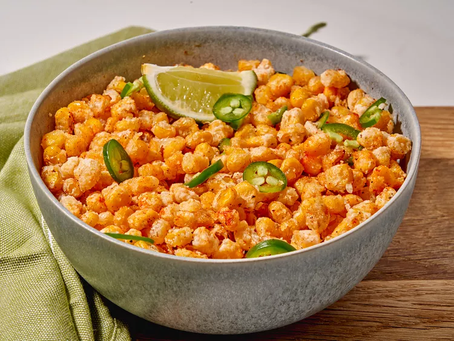

Crispy Corn

Description :
This simple snack, crispy corn, is made by coating corn kernels with cornstarch and deep frying.
the recipe was first introduced in the menu of restaurant chain barbeque nation as starter meal. but now it has been accepted by many other restaurant chains and also by several street foods and fast food vendors.
Ingrediants :
- 3 cups of oil
- 2 cans sweet corn, well drained
- 1/4th cup cornstarch
- 1 teaspoon salt
- 1/2 teaspoon paprika
- 1/2 teaspoon freshly ground black pepper
- lime wedges and fresh jalapeno slices
Directions :
- Step 1
Heat oil in a medium saucepan to 350 degrees F (175 degrees C).Pour drained corn on a large plate lined with paper towels and pat dry.
- Step 2
Toss corn with cornstarch until lightly coated. Work in batches, about 1/2 cup at a time. Shake off excess cornstarch and carefully lower corn into hot oil, using a slotted spoon. Fry until lightly golden brown and crispy, 2 to 3 minutes; drain on paper towels.Repeat with remaining corn.
- Step 3
Season with paprika and pepper; squeeze lime juice over and sprinkle with jalapenos if desired.